Unidade-piloto · 8º e 9º ano · letramento em IA
PATEO é um ecossistema de aprendizagem em inteligência artificial para professores e alunos. Começamos por quem ensina, dando ao professor o que nunca lhe foi oferecido: formação, material e apoio.
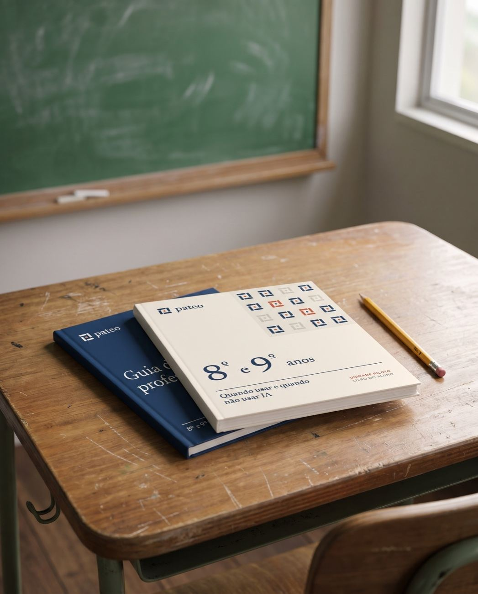
Menos plataforma.
Mais sala de aula.Uma unidade de seis aulas de 50 minutos. Funciona sem internet, sem aplicativo, sem celular de aluno. Impresso, com o professor mediando.
01 — Por que agora
Os alunos já usam IA todos os dias. A escola foi chamada a responder. Quem responde, aula por aula, é o professor.
Parecer CNE/CP 15/2026Diretrizes do Conselho Nacional de Educação para IA na educação, aprovadas em setembro de 2026 e homologadas pelo MEC em novembro. A regra prevista para os Anos Finais: IA generativa só com mediação do professor. A resolução ainda não foi publicada.
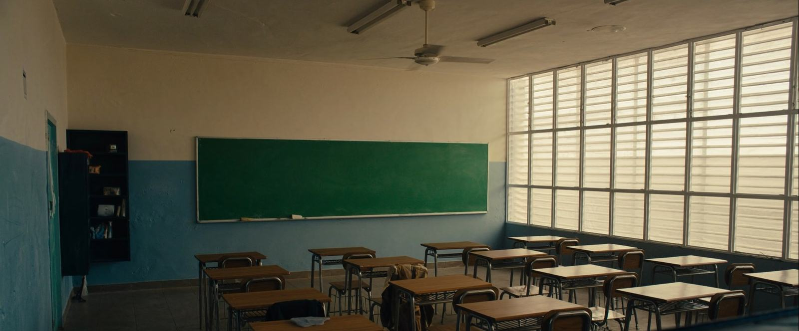
Sem formação.Sem material pronto.Muitas vezes, sem internet.
03 — O guia e o livro
O professor prepara de um lado. O aluno vive do outro. Mesma unidade, mesma página.
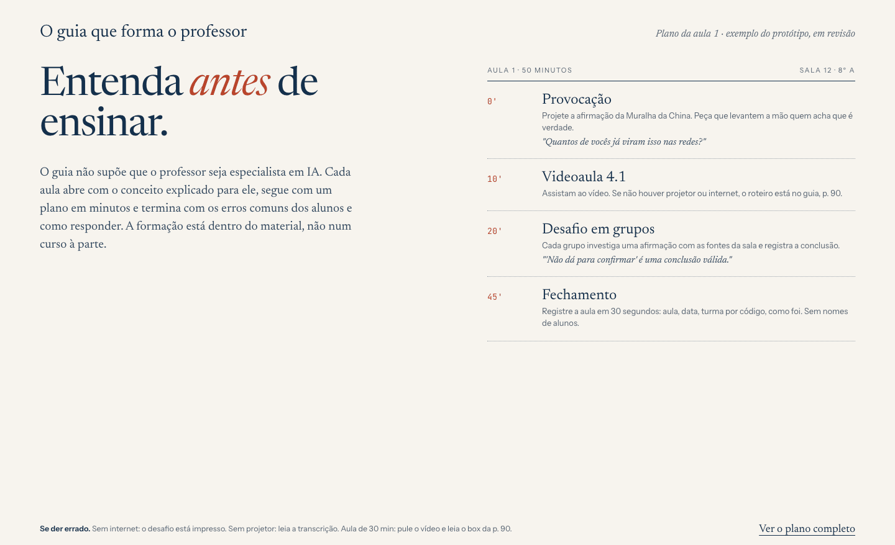
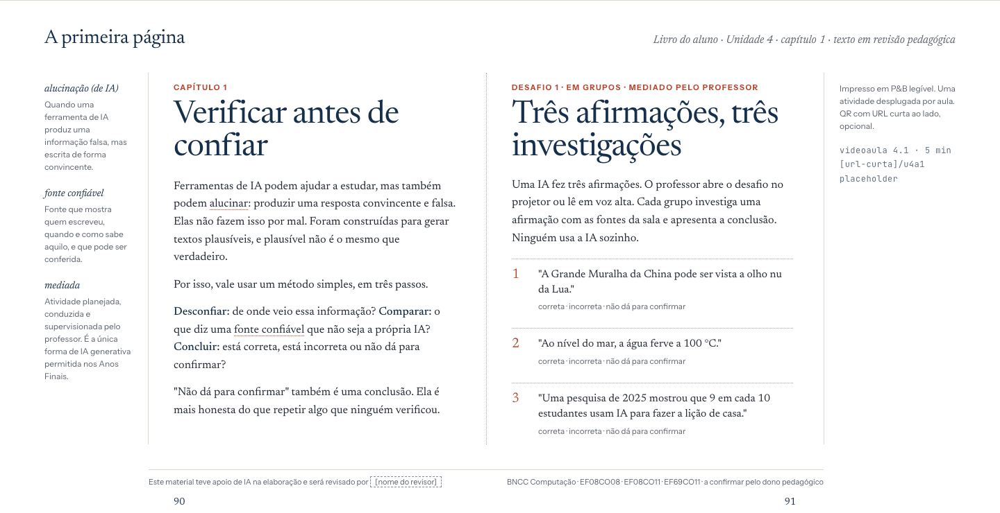
Páginas desenhadas no sprint de design, com o texto da primeira aula em revisão pedagógica. O guia se constrói primeiro; o livro nasce do mesmo texto-fonte.
04 — O que o aluno aprende
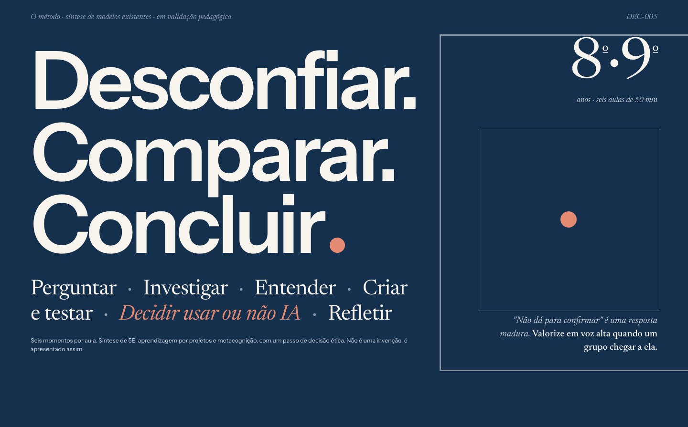
O mesmo livro, em qualquer tela.
Paginação igual à do impresso: professor e alunos falam da "página 42" no papel, no celular ou no tablet. Visão futura, fotografia ilustrativa com tela do projeto.
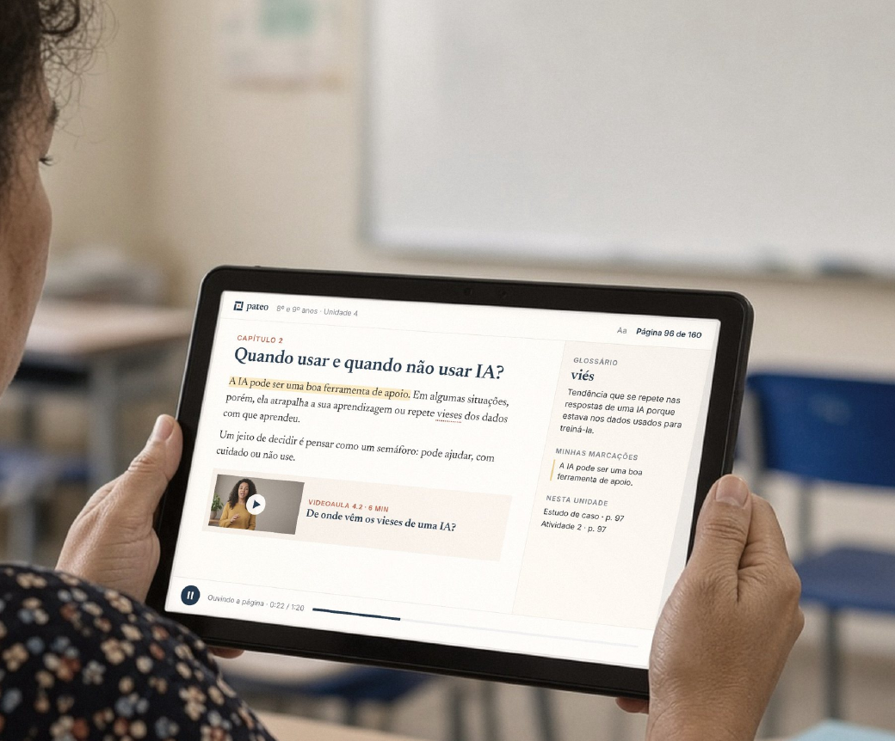
05 — A aula, passo a passo
telas do protótipo navegável · dados fictícios · plataforma prevista para a fase 2
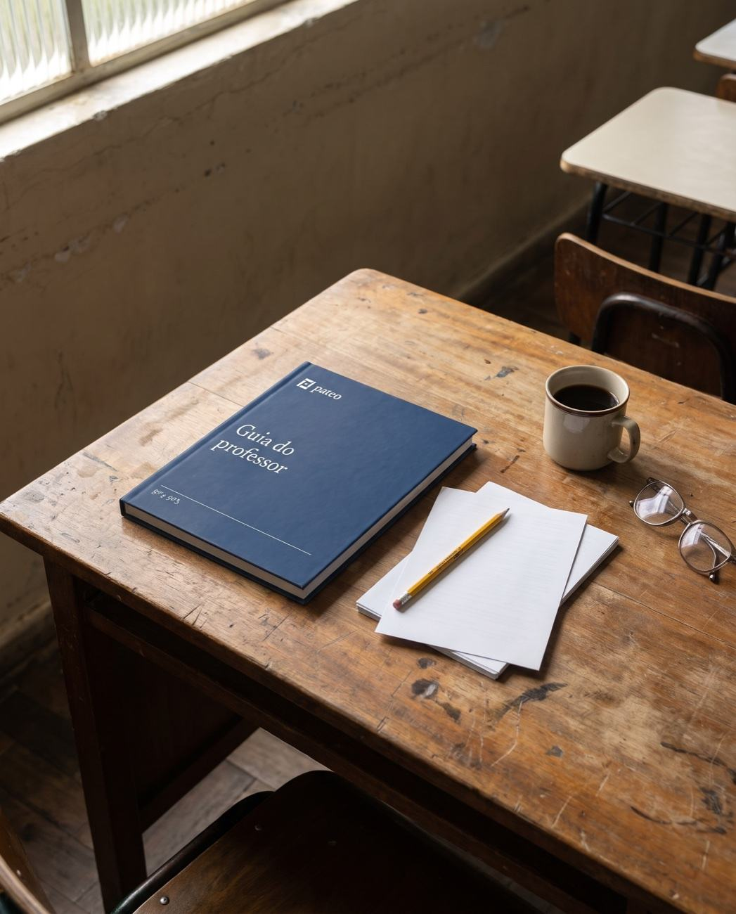
1Aprender
Cinco minutos de microformação antes da aula. O conceito explicado ao professor, não ao aluno.
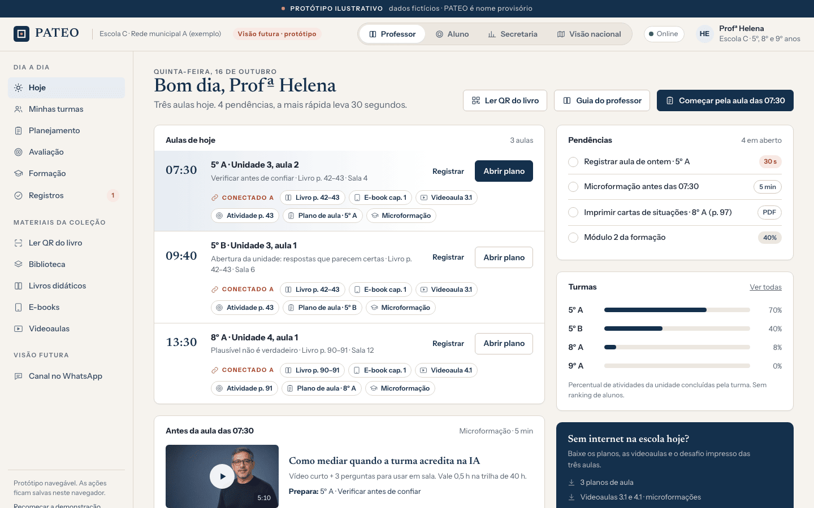
2Preparar
O plano com a formação dentro: objetivos, habilidades, roteiro em blocos de tempo. Em minutos, não em horas.
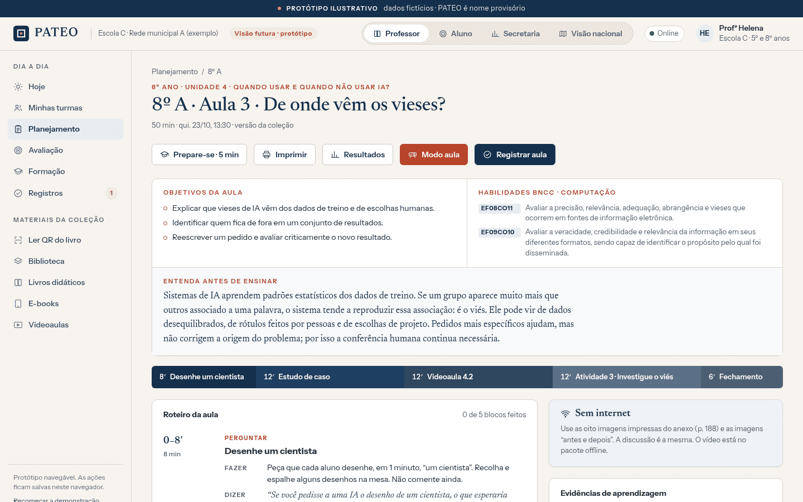
3Aplicar
A atividade no projetor, as notas do professor fora dele. Sem projetor, está tudo impresso.
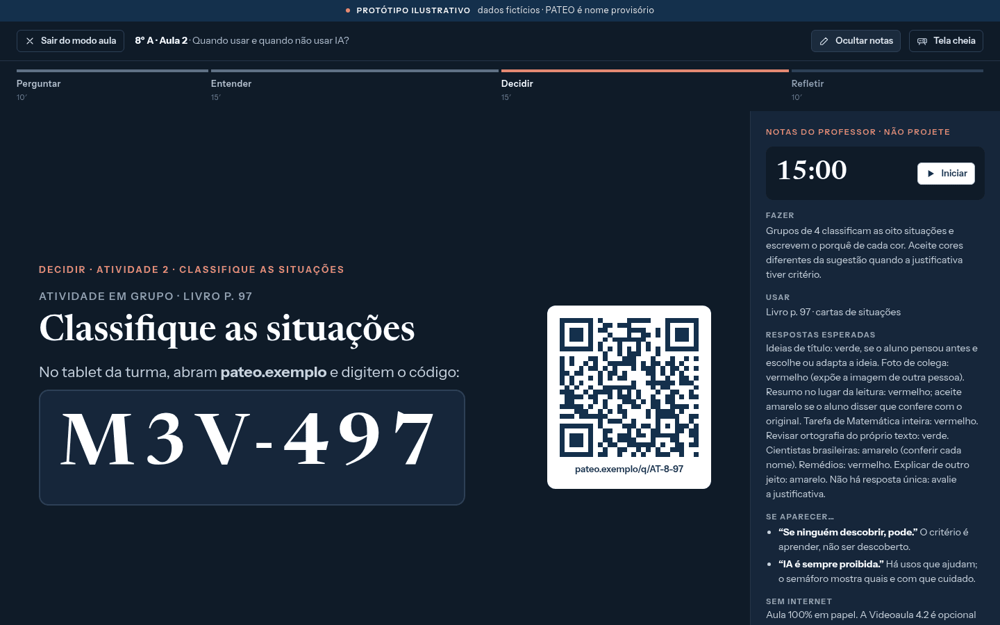
4Refletir
Trinta segundos de registro. Resultados por grupo, nunca por aluno. Uma sugestão para a próxima aula.
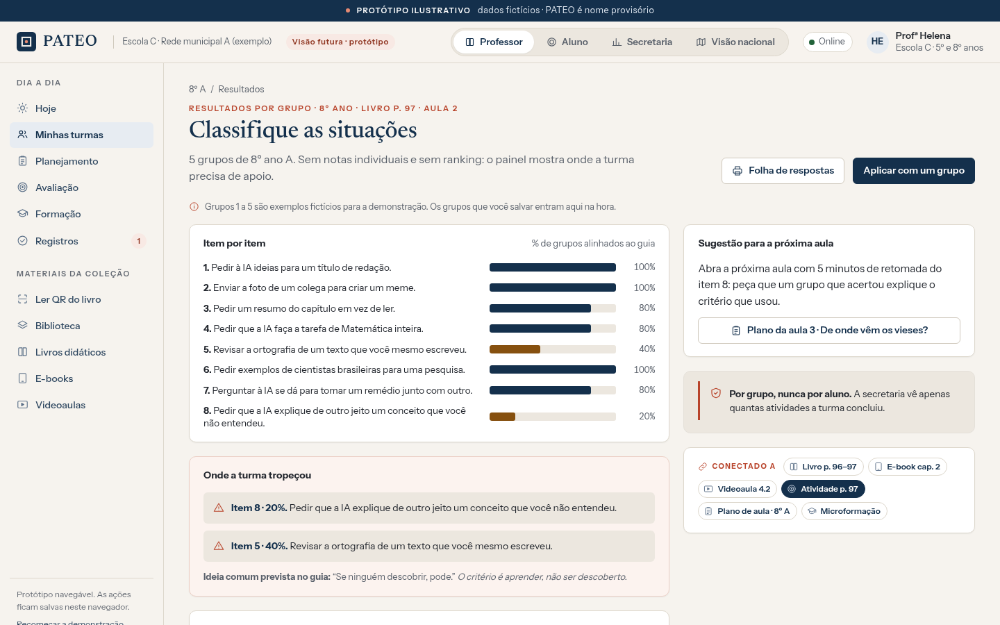
07 — Onde estamos
Documento mestre do produto. Dossiê de mercado e regulação. Método pedagógico. Identidade visual. Site, guia e livro desenhados.
A plataforma, clicável no navegador, com dados inventados. Nenhuma função construída de verdade.
Conteúdo completo escrito e revisado. Vídeos gravados. Responsável pedagógico. Parceria formalizada. Primeira rede.
Próximo passo: piloto com três a seis professores e suas turmas, no primeiro semestre de 2027. Sem custo para a rede.
nome provisório · nenhuma rede assinou · nada foi vendido · material de trabalho
Anexo — O detalhe, para quem quiser
Os alunos já usam ChatGPT e similares todo dia e não sabem checar quando a IA erra. Em 2026 o Conselho Nacional de Educação aprovou diretrizes para IA na educação, homologadas pelo MEC em novembro, com uma regra prevista: IA generativa nos Anos Finais só com o professor mediando. A resolução ainda não foi publicada, mas a direção é clara: a tarefa cai no professor. E ninguém o formou para isso, não há material pronto para usar e a escola muitas vezes não tem internet.
Duas experiências ligadas dentro de um só produto. Para o professor: formação prática em IA, guia, microvideoaulas, planos de aula minuto a minuto e acompanhamento. Para o aluno: livro, atividades e letramento em IA com pensamento crítico, sempre orientado pelo professor. Tudo em torno de uma unidade de seis aulas sobre IA para 8º e 9º ano, que funciona sem internet, sem aplicativo, sem celular de aluno.
Um documento mestre do produto com 66 requisitos e 18 decisões tomadas. Um dossiê de mercado e de regulação. O método pedagógico em seis momentos por aula. A identidade visual, o site desenhado, um sistema de design e um protótipo navegável da plataforma. A página dupla do livro do aluno e a página do guia, desenhadas. Conversa aberta com uma parceira comercial que já vende para prefeituras.
Usam o professor e o aluno. Quem compra é a Secretaria Municipal de Educação, que contrata formação e material para a rede e acompanha o programa. Formação com material impresso entra por um caminho de compra mais simples que software, e não guarda nenhum dado de criança.
É o espaço de trabalho do professor e o painel da Secretaria; o aluno participa pela sala de aula e pelo material impresso. Existe hoje como protótipo navegável, com dados inventados. Entra na fase 2, depois do piloto, quando os professores tiverem dito o que realmente precisam.
Registrar no documento mestre a ordem de desenvolvimento, formalizar a parceria comercial, abrir a empresa com advogado e contador, trazer um responsável pedagógico que assine o conteúdo e fechar a primeira rede para o piloto.
Quando e como o livro do aluno entra. Faz parte da visão aprovada. Falta definir se entra já no piloto ou na rodada seguinte, e em que formato: capítulo impresso por aluno, folhas de atividade, ou os dois.
Registrar a sequência no documento mestre. Dois públicos, ordem de desenvolvimento começando pelo professor. Reler os 66 requisitos nessa ordem.
O formato da formação docente. Carga horária, certificado, se conta como formação continuada para a rede. Nada definido; o protótipo mostra uma trilha só como ilustração.
O que o piloto mede. Primeiro, se o professor consegue preparar e dar a aula com o material. Depois, o que a turma produziu no desafio, por grupo. Pesos a definir com o responsável pedagógico.
Quais telas entram na fase 2. O protótipo tem mais telas do que o piloto precisa. Decisão só depois do piloto.
Pesquisa de mercado e regulação, dossiê, documento mestre, método, primeiros mockups e protótipo navegável.
Identidade visual e site em três sprints de design. Esta apresentação. Sequência definida: professor primeiro, aluno junto.
Documento mestre revisado, parceria comercial, advogado e empresa, responsável pedagógico, primeira rede.
Escrever e revisar o guia, os planos e as atividades; gravar as microvideoaulas; o livro em paralelo; imprimir o material do piloto.
Piloto. Relatório. Decisão de escala e de fase 2.